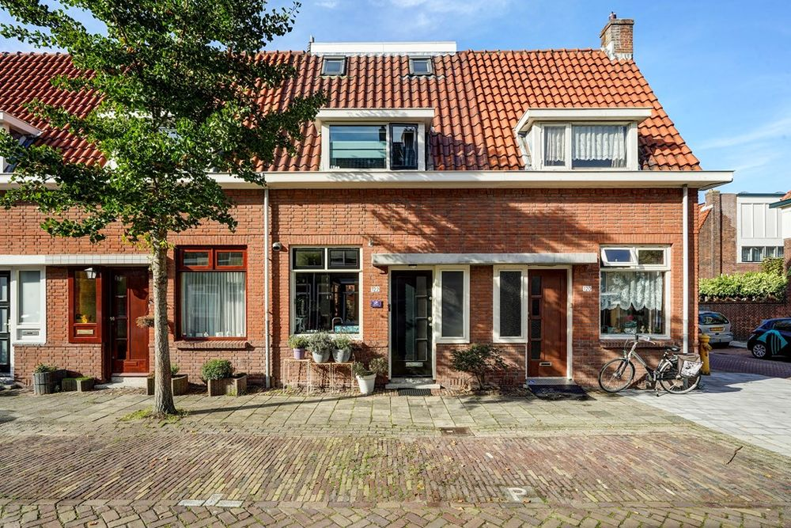
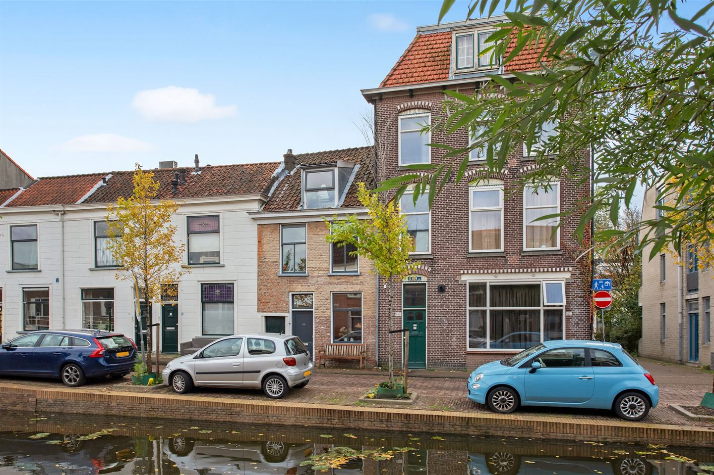

Dit huis, bekend als "Villa Maria" ligt naast de Rijn en heeft 7 slaapkamer, een woonoppervlakte van 299m2 en een
perceel van 1000m2, dit kan de uwe zijn voor €2.750.000 k.k.
2612 HL
Raamstraat 122, Delft

Met 4 kamers en dichtbij een school liggend is dit het ideale huis voor een gezin met een jong kind. Met een
woonoppervlakte van 95m2 bieden wij dit aan voor €485.000 k.k
2613SG
Van der Kamlaan 17, Delft
Dit huis is perfect voor mensen die graag een frisse neus halen, aangezien dit huis een 20 meter diepe achtertuin
heeft, vol met groen, met 4 slaapkamers en 101m2 woonoppervlak is dit uw huis voor slechts €425.000 k.k.
2625 KL
Gasthuislaan 251, Delft

Dit huis heeft een modern interieur, gepaart met een klassieker exterieur, en is een architectonisch meesterwerk
voor koppels, met 2 slaapkamers en 96m2 woonoppervlak. De vraagprijs behoudt €500.000 k.k.
2611 PZ